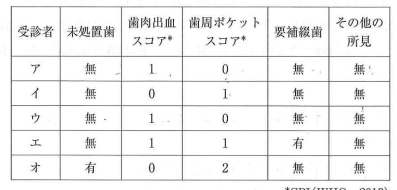

CPI（Community Periodontal Index：地域歯周疾患指数）は、WHOが制定した歯周病の疫学指標。大規模集団における歯周疾患の実態把握に用いられる。
1997年にCPITN（地域歯周疾患処置必要度指数）から改変された。
以下の10歯を検査対象とする。
| 上顎 | 17, 16, 11, 26, 27 |
|---|---|
| 下顎 | 47, 46, 31, 36, 37 |
代表歯がない場合は、その分画のすべての残存歯を検査。
| コード | 状態 | 処置 |
|---|---|---|
| 0 | 健全 | なし |
| 1 | プロービング後の出血 | TBI |
| 2 | 歯石の存在 | TBI + スケーリング |
| 3 | 4〜5mmのポケット | TBI + SRP |
| 4 | 6mm以上のポケット | TBI + SRP + 歯周外科 |
ある市が行った歯周疾患検診の検査結果の一部を表に示す。
「要精密検査」に該当する受診者はどれか。3つ選べ。

【解説】
要精密検査 = CPIコード3以上（4mm以上のポケット）
・イ：コード3あり → 要精密検査
・エ：コード3あり → 要精密検査
・オ：コード4あり → 要精密検査
注意：コード2（歯石）は「要指導」であり要精密検査ではない
歯周プローブを用いて評価するのはどれか。2つ選べ。
【解説】
プローブを使用する指標：
・GI（Gingival Index）：プローブで歯肉を軽く触れ出血を確認
・BOP（Bleeding on Probing）：プロービング時の出血
・CPI：専用プローブでポケット深さと出血を評価
プローブを使用しない指標：
・OHI：視診で歯垢・歯石を評価
・PMA Index：視診で歯肉の炎症を評価
・PCR：染め出し後、視診でプラーク付着を評価